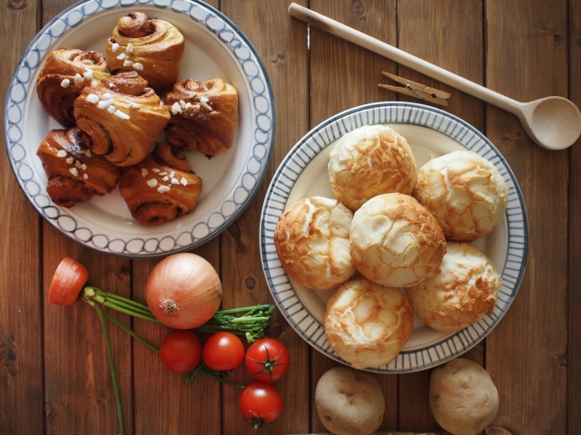
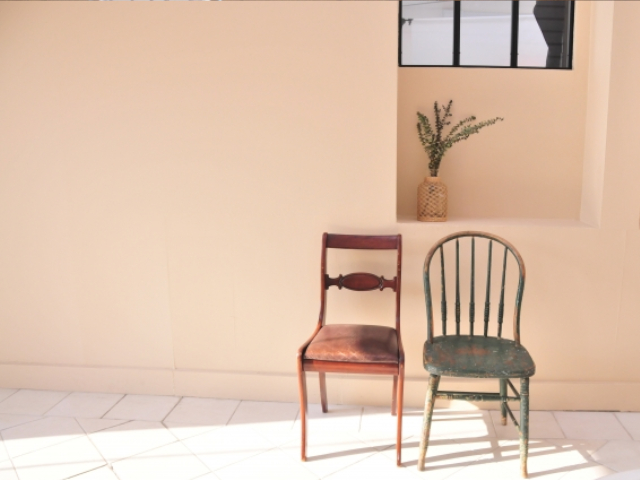
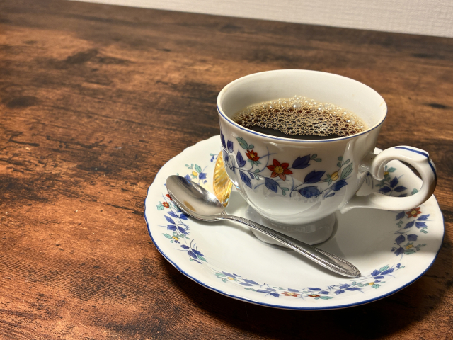

【特集】週末を彩る、自家製パンと極上コーヒーの心地よい時間
忙しい平日に区切りをつけ、ゆっくりと時間をかけて準備する週末の朝食。焼き立てパンの香ばしい香りと丁寧にドリップしたコーヒーで、心がすっと解けていく特別な朝の過ごし方をご提案します。

忙しい平日に区切りをつけ、ゆっくりと時間をかけて準備する週末の朝食。焼き立てパンの香ばしい香りと丁寧にドリップしたコーヒーで、心がすっと解けていく特別な朝の過ごし方をご提案します。

シンプルでありながら、どこか温かみを感じさせる北欧デザイン。お部屋全体を変えなくても、木の温もりが残るチェアややわらかな照明をひとつ取り入れるだけで、いつものリビングがより愛おしい空間に変わります。

普段のおうち時間を少しだけ贅沢にするドリップコーヒー。浅煎り・深煎りの特徴から、お湯の温度と注ぎ方のコツまで、初心者でも今日から実践できる美味しい淹れ方のポイントをまとめました。